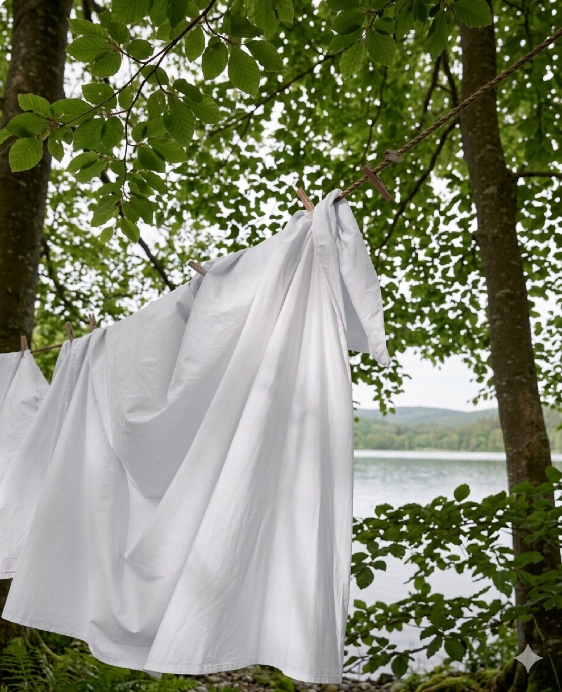

Om Somniore
Sömn, drömmar och stillhet — sängkläder för en lugnare vardag.
Somniore föddes ur en enkel övertygelse: att vila inte är en belöning, utan nödvändigt. Och att ett lugnt sovrum börjar med sängen.

Hantverk
Vävt i Guimarães.
Våra sängkläder vävs i Guimarães — Portugals textilhjärta, där kunnandet gått i arv i generationer. Där förvandlas europeiskt lin och fint kammad bomull till tyger med en tyngd och mjukhet man känner direkt.

Formgivning
Formgivet i Sverige.
Färgerna hämtar vi från nordisk natur — skog, fjord, sand och snö. Detaljerna är tidlösa och få. Inget överflödigt, bara det som gör sömnen bättre.
The Nordic Way of Sleeping.
Naturliga material
Andningsbara fibrer, valda för komfort och lång livslängd.
Svalare sömn
Lätta sängkläder som ger behaglig komfort året runt.
Färre distraktioner
Ett lugnare sovrum börjar med färre saker.
Bättre återhämtning
Vila är ingen belöning. Den är nödvändig.